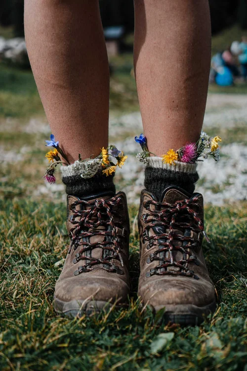

My Squarespace travel blog gets more than 50,000 monthly visitors — almost 100,000 in the highest traffic month.
It took me less than a year to grow my travel blog to this level...
Why Squarespace?
In some Facebook groups, you’ll see most travel bloggers shouting about Wordpress... I strongly disagree.
How I grew my Squarespace travel blog
- Pick a niche and stick with it early on
- Focus on value and audience needs
- Publish consistently
Pros and Cons of Squarespace
Pros
- Easy-to-use editor
- Built-in SEO tools
Cons
- Limited blog post editing features
- Some SEO constraints (image alt tags, etc.)
Steps to Start Your Blog
- Choose a name and domain
- Plan your content
- Select a template
- Customize URLs carefully
- Create your core pages
SIGN UP
For behind-the-scenes tips on running a Squarespace blog.